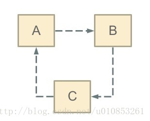
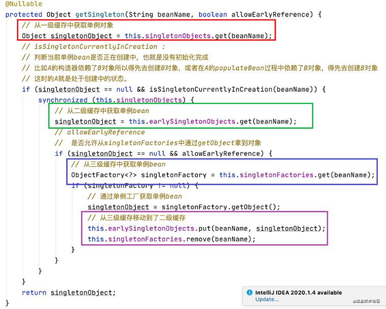
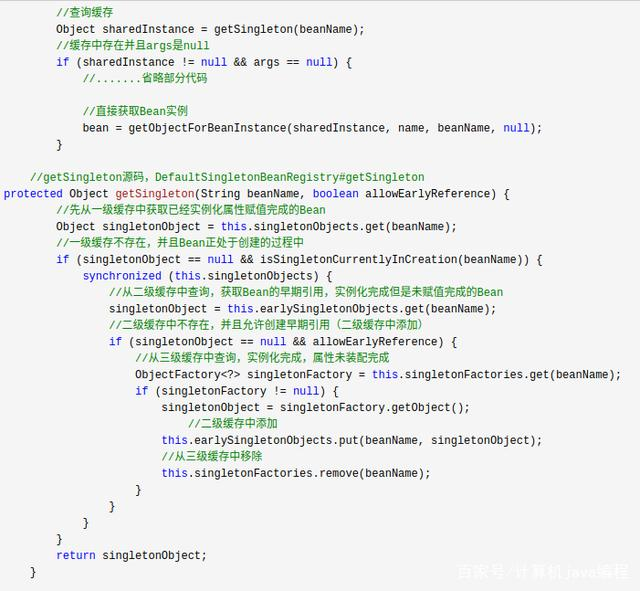
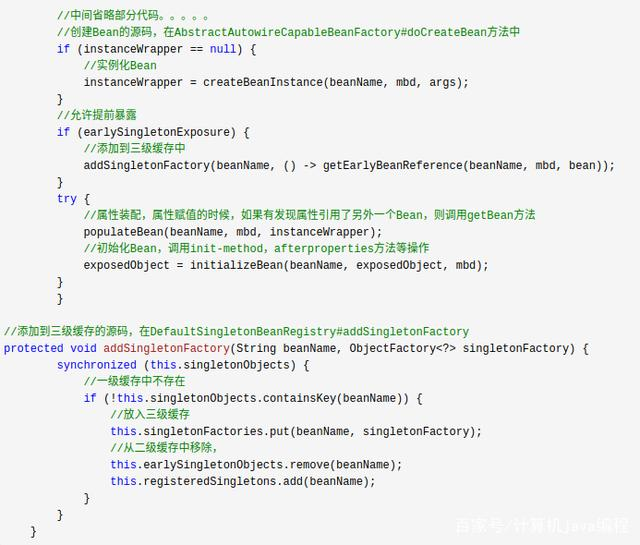
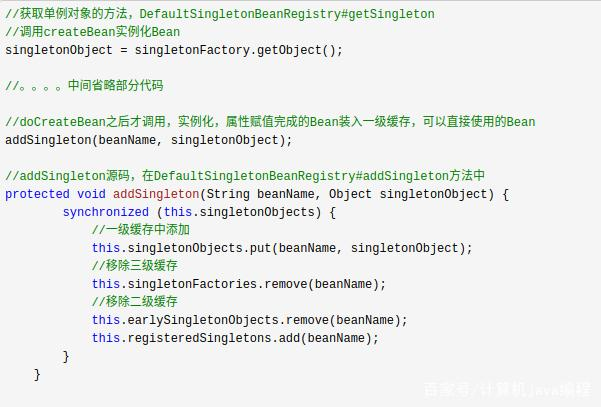
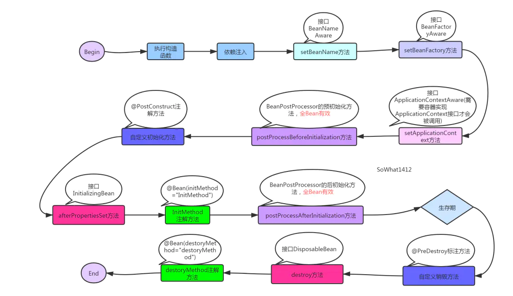
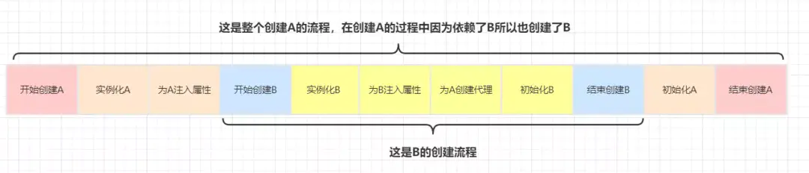
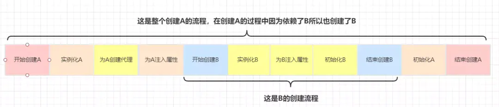
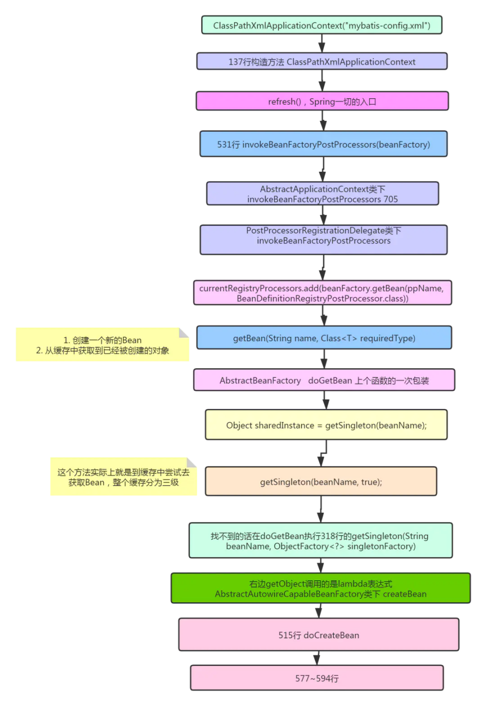

java_spring05循环依赖¶
循环依赖：其实就是循环引用，也就是两个或则两个以上的bean互相持有对方，最终形成闭环。比如A依赖于B，B依赖于C，C又依赖于A。如下图 
三级缓存机制¶
一个对象一般创建过程有3部分组成：
实例化：简单理解就是new了一个对象
属性注入：为实例化中new出来的对象填充属性
初始化：执行aware接口中的方法，初始化方法，完成AOP代理
Spring中有三个缓存，用于存储单例的Bean实例，这三个缓存是彼此互斥的，不会针对同一个Bean的实例同时存储。
如果调用getBean，则需要从三个缓存中依次获取指定的Bean实例。 读取顺序依次是一级缓存–>二级缓存–>三级缓存

Spring解决循环依赖的核心思想在于提前曝光(个人觉得称为分级曝光，或分层曝光更合理。提前曝光侧重时间视角的先后顺序，分级曝光（分层曝光）侧重空间视角的次序，而既然实现的方式为“三级缓存”，所以从空间视角的命名更为合理)。
首先，先丢个大概的思路出来
01，对象（或其构造方法，工厂方法，此处认为这仨是一伙的，不特意区别）都是先进入三级缓存
02，稍后，进入二级缓存，同时从三级缓存中清除
03，再稍后，进入一级缓存，同时从二级缓存中清除
整个流程简单来说，就是一个”实例”的打怪升级，和不断丰满过程
再次，依次理解各级缓存中存放的东西：
第一级缓存:此对象的完整对象。类似常规单例模式中常用的key,value=>class,instance的存储模式，如果这个不清楚，随便看个单例模式代码应该就能清楚了。
第二级缓存:此对象被创建，但只有裸对象，没有属性
第三级缓存:此对象的构造方法出现在spring的代码逻辑中，spring初次认识到有这么个可创建的东西，可以认为存放的是实例的构造方法，或生成实例的工厂方法等，他可以生成出第二级缓存需要的裸对象。
从这个角度看，第三级缓存还是存在一定特殊性的，他存放的构造方法，而不是实例。
三级缓存更为严谨的定义如下
| 缓存 | 说明 | | ——————– | ——————————————————————————– | | singletonObjects | 第一级缓存，存放可用的成品Bean。 | | earlySingletonObjects | 第二级缓存，存放半成品的Bean，半成品的Bean是已创建对象，但是未注入属性和初始化。用以解决循环依赖。 | | singletonFactories | 第三级缓存，存的是Bean工厂对象，用来生成半成品的Bean并放入到二级缓存中。用以解决循环依赖。 |
singletonObject：一级缓存，该缓存key = beanName, value = bean;这里的bean是已经创建完成的，该bean经历过实例化->属性填充->初始化以及各类的后置处理。因此，一旦需要获取bean时，我们第一时间就会寻找一级缓存
earlySingletonObjects：二级缓存，该缓存key = beanName, value = bean;这里跟一级缓存的区别在于，该缓存所获取到的bean是提前曝光出来的，是还没创建完成的。也就是说获取到的bean只能确保已经进行了实例化，但是属性填充跟初始化肯定还没有做完，因此该bean还没创建完成，仅仅能作为指针提前曝光，被其他bean所引用
singletonFactories：三级缓存，不是用来存bean的实例，而是用来存函数接口、钩子函数的！该缓存key = beanName, value =beanFactory;在bean实例化完之后，属性填充以及初始化之前，如果允许提前曝光，spring会将实例化后的bean提前曝光，也就是把该bean转换成beanFactory并加入到三级缓存。在需要引用提前曝光对象时再通过singletonFactory.getObject()获取。
源码解析¶
从源码角度分析spring的解决方式
getSingleton(beanName)：

从源码可以得知，doGetBean最初是查询缓存，一二三级缓存全部查询，如果三级缓存存在则将Bean早期引用存放在二级缓存中并移除三级缓存。（升级为二级缓存）
addSingletonFactory：

从源码得知，Bean在实例化完成之后会直接将未装配的Bean工厂存放在三级缓存中，并且移除二级缓存
addSingleton：

一句话，Bean添加到一级缓存，移除二三级缓存。
其他问题¶
为什么要使用二级缓存？¶
二级缓存作用是：暴露早期对象，为了将 成熟bean 和 纯净bean 分离。防止多线程中在Bean还未创建完成时读取到的Bean是不完整的。
还有一点关于bean的Aop动态代理的问题，我们都知道Bean的aop动态代理创建是在初始化之后，但是循环依赖的Bean如果使用了AOP。 那无法等到解决完循环依赖再创建动态代理， 因为这个时候已经注入属性。 所以如果循环依赖的Bean使用了aop. 需要提前创建aop。
三级缓存存在的意义¶
只有真正发生循环依赖的时候，才去提前生成代理对象，否则只会创建一个工厂并将其放入到三级缓存中，但是不会去通过这个工厂去真正创建对象
二级缓存能否解决循环依赖，三级缓存存在的意义¶
我们直接将提前曝光的对象放到二级缓存earlySingletonObjects，Spring循环依赖时直接取就可以解决循环依赖了，为什么还要三级缓存singletonFactory然后再通过getObject()来获取呢？这不是多此一举？
我们回到添加三级缓存，添加SingletonFactory的地方，看看getObject()到底做了什么操作
this.addSingletonFactory(beanName, () -> {
return this.getEarlyBeanReference(beanName, mbd, bean);
});
可以看到在返回getObject()时，多做了一步getEarlyBeanReference操作，这步操作是BeanPostProcess的一种，也就是给子类重写的一个后处理器，目的是用于被提前引用时进行拓展。即：曝光的时候并不调用该后置处理器，只有曝光，且被提前引用的时候才调用，确保了被提前引用这个时机触发。
是否可以用二级缓存而不用三级缓存？¶
答案：不可以，违背Spring在结合AOP跟Bean的生命周期的设计！Spring结合AOP跟Bean的生命周期(看下图)本身就是通过AnnotationAwareAspectJAutoProxyCreator这个后置处理器来完成的，在这个后置处理的postProcessAfterInitialization方法中对初始化后的Bean完成AOP代理。如果出现了循环依赖，那没有办法，只有给Bean先创建代理，但是没有出现循环依赖的情况下，设计之初就是让Bean在生命周期的「最后一步完成代理 而不是在实例化后就立马完成代理」。

使用了三级缓存的情况下，A、B的创建流程

不使用三级缓存，直接在二级缓存中

结论：上面两个流程的唯一区别在于为A对象创建代理的时机不同，使用三级缓存的情况下为A创建代理的时机是在B中需要注入A的时候，而不使用三级缓存的话在A实例化后就需要马上为A创建代理然后放入到二级缓存中去。三级缓存是无法提速的！
面试官：为什么要使用三级缓存呢？二级缓存能解决循环依赖吗？¶
答：如果要使用二级缓存解决循环依赖，意味着所有Bean在实例化后就要完成AOP代理，这样违背了Spring设计的原则，Spring在设计之初就是通过AnnotationAwareAspectJAutoProxyCreator这个后置处理器来在Bean生命周期的最后一步来完成AOP代理，而不是在实例化后就立马进行AOP代理。
跟踪核心大致流程¶

多例和构造器为什么无法解决循环依赖¶
为什么多例Bean不能解决循环依赖？
我们自己手写了解决循环依赖的代码，可以看到，核心是利用一个map，来解决这个问题的，这个map就相当于缓存。 为什么可以这么做，因为我们的bean是单例的，而且是字段注入（setter注入）的，单例意味着只需要创建一次对象，后面就可以从缓存中取出来，字段注入，意味着我们无需调用构造方法进行注入。
如果是原型bean，那么就意味着每次都要去创建对象，无法利用缓存；
如果是构造方法注入，那么就意味着需要调用构造方法注入，也无法利用缓存。
为什么Spring不能解决构造器的循环依赖？
因为构造器是在实例化时调用的，此时bean还没有实例化完成，如果此时出现了循环依赖，一二三级缓存并没有Bean实例的任何相关信息，在实例化之后才放入三级缓存中，因此当getBean的时候缓存并没有命中，这样就抛出了循环依赖的异常了。
允许循环依赖是否合理¶
个人之前觉的不合理，但后来觉得合理
不合理：设计缺陷，为何有循环依赖出现
合理：的确有实际场景对应，大概率是由于A的部分函数依赖B（可能b只是一部分属性），B的部分函数又依赖A（可能也只是一部分属性），但由于spring的ioc机制，无法精细控制使得我们可以只初始化A的某一部分（也就是分情况初始化，其实可以，但比较麻烦，而且这么做会脱离ioc的初衷）。
gc是否会有问题¶
为什么Spring不能解决构造器的循环依赖？¶
从流程图应该不难看出来，在Bean调用构造器实例化之前，一二三级缓存并没有Bean的任何相关信息，在实例化之后才放入三级缓存中，因此当getBean的时候缓存并没有命中，这样就抛出了循环依赖的异常了。
为什么多实例Bean不能解决循环依赖？¶
多实例Bean是每次创建都会调用doGetBean方法，根本没有使用一二三级缓存，肯定不能解决循环依赖。
earlySingletonObjects二级缓存是鸡肋吗？¶
earlySingletonObjects缓存的目的是，通过三级缓存在获取对象会执行一些列的后置处理器，通过earlySingletonObjects来缓存提升性能。
参考¶
Spring解决循环依赖，你真的懂了吗？：https://baijiahao.baidu.com/s?id=1661554759252546253&wfr=spider&for=pc
聊聊Spring循环依赖三级缓存是否可以减少为二级缓存的情况:https://www.jb51.net/article/206470.htm
高频面试题：Spring 如何解决循环依赖？:https://zhuanlan.zhihu.com/p/84267654
框架源码专题：SPRING是如何解决循环依赖的？为什么无法解决多例和构造器的循环依赖:https://www.freesion.com/article/62151334702/
spring解决循环依赖:http://www.zzvips.com/article/108311.html
Spring高频面试题：如何解决循环依赖问题:https://blog.csdn.net/m0_46995061/article/details/109771353
烂大街的Spring循环依赖该如何回答？：https://www.jianshu.com/p/1c250965b1d3
逐行解读Spring- 没人比我更懂循环依赖:https://my.oschina.net/u/4846815/blog/5017044